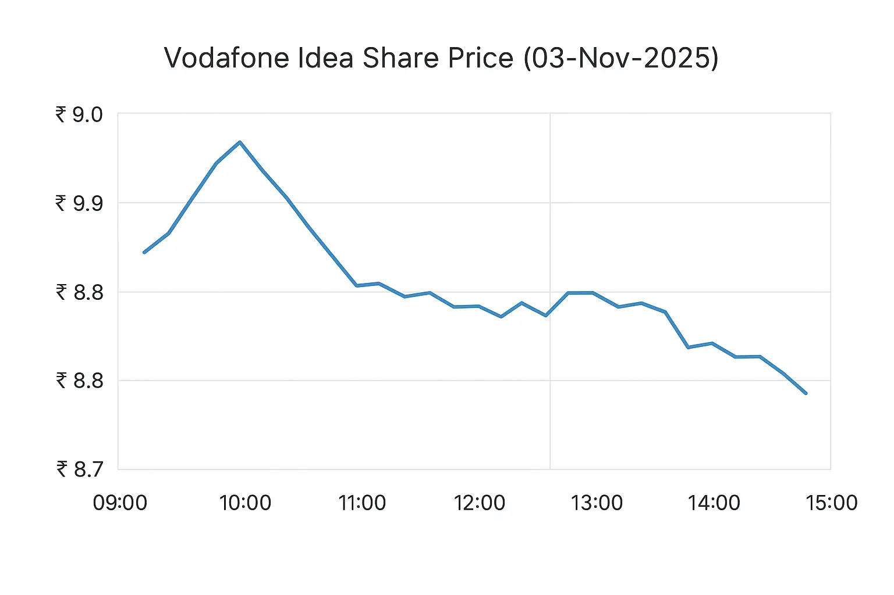

Aaj intraday mein Vodafone Idea ka share roughly ₹8.8–₹9.0 ke beech trade hua; Kotak Securities ne 03 Nov 2025 ko ₹8.80 bataya.
Dusre data feeds (Yahoo/market history) ka intraday snapshot bhi similar range dikhata hai — example: open 9.15, high 9.20, low 8.84, last/close ~8.96 (intraday tick).
Kal (previous trading day) ka close market feeds ke mutabik lagbhag ₹8.7–₹8.9 tha (Kotak ne previous close ₹8.7 mention kiya).
Short summary: aaj ka traded range ≈ ₹8.8–₹9.0, aur kal ka close ≈ ₹8.7–₹8.9.

2.Aane wale kuch dino/hafton mein (short term) kya chances hain?
Short term mein Vodafone Idea par market movement mainly teen catalysts pe depend karega:
Private equity / strategic investor news — market mein news aa rahi hai ki Tillman Global Holdings (TGH) jaise investors $4–6 billion ke investment options dekh rahe hain; aisi khabar aane par share price jaldi upar ja sakta hai (sentiment sharp move). Par jab tak deal confirmed aur terms clear nahin hote, rally speculative rahegi
AGR / government relief developments — Supreme Court / sarkari review aur possible restructuring/waiver se company ke liability profile mein visible improvement aaye to market positive react karega. Recent legal/administrative moves ne hope create kiya hai.
Operational updates / quarterly metrics —:ARPU (average revenue per user), churn, data usage, 4G/5G rollouts aur network performance measures agar better aaye to medium-term confidence badhegi. Quarterly results aur guidance se volatility aasakti hai.
Possible short-term scenarios (probability-style, approximate):
Bull case (news confirms large equity infusion / operational control change):sharp upside 20–50% in short term (speculative), kyunki big capital infusion aur management change se debt/operational worries kam ho sakte hain.
Base case (partial relief on AGR / phased funding, slow operational improvement):modest upside 10–25% over weeks–months as confidence gradually return.
Bear case (deal fails / no material relief / continued losses & dilution): downside risk wapas aa sakta hai —more than 20% decline possible, especially agar equity dilution ya fresh liabilities announce hue.
Short term mein market sentiment aur headline risk dominate karega; fundamentals ka effect thoda slower aayega.
3. Kya company grow karegi — medium/long term outlook
Growth ki sambhavnayein depend karti hain in cheezon par:
Debt & capital structure:odafone Idea historically heavy debt-burden aur deferred spectrum dues se joojh rahi hai. Agar capital infusion ho jaye (equity ya strategic investor) aur AGR liabilities ka practical solution mil jaaye, to company ko network capex (5G/4G upgrades) aur marketing mein invest karne ka scope milega — jo subscriber recovery aur ARPU improvement ke liye zaroori hai. Agar ye na ho to growth mushkil hogi.
Network investment & 5G rollout:users data usage badhne par operators ko network upgrade karna padta hai. Vi ne pichle kuch quarters mein network improvement aur sharing deals par kaam kiya hai; par realistically, sustained growth tabhi aayegi jab capex consistent aur timely ho.
Market dynamics (competition & pricing):India mein Reliance Jio aur Bharti Airtel dono strong players hain. Agar Vi ARPU improve karna chaahe to service differentiation (better coverage, bundled services, enterprise offerings) aur pricing discipline ki zaroorat padegi. Agar price war continue raha to margins squeeze honge.
Regulatory / government support:past mein government ne sector relief measures diye hain; agar further pragmatic policy (debt conversion, payment extensions) aaye to Vi ka survival aur phased growth dono possible hain.
Bottom line (medium term):Vi ka survival aur growth possible hai agar (a) meaningful capital infusion ya debt restructuring ho, (b) AGR/spectrum related uncertainties ko durable solution mil jaye, aur (c) company network aur customer metrics improve kare. In teen cheezon mein se koi ek ya do agar fail hue to long-term growth uncertain rahegi.
4.Company abhi kya policy/idea laga rahi hai — practical actions aur announcements
Jo publicly available information aur company/market reports se pata chala:
Equity / capital raise discussions:market reports aur news agencies mention kar rahi hain ki US-based investors ek bada capital infusion dekh rahe hain (figures $4–6 billion ki reporting ho rahi hai). Agar yeh finalize hua to balance sheet mein relief milega and capex possible hoga.
Government stake conversion / restructuring history:earlier government equity conversion (spectrum auction dues convert karne) aur related steps se Vi ka ownership/debt profile change hua tha; similar policy steps/negotiations ab bhi discussion mein hain, jo company ko time aur relief de sakte hain.
Network improvements & operational efficiency:company investor pages aur quarterly notes show karte hain ki Vi network modernization, tower sharing, spectrum refarming aur cost optimization par kaam kar rahi hai. Ye steps ARPU aur churn par positive impact dene ke liye zaroori hain.
Legal / AGR strategy:company aur government ke beech AGR dues ko lekar reviews aur legal steps chal rahe hain; Supreme Court ne Centre ko kuch review/assessment allow kiya jisse practical settlement ka raasta khul sakta hai. Ye directly company ke liabilities ko affect karega.
5. Financial health (concise)
Recent quarterly numbers show continued losses but also revenue stability in telecom services; raw profitability remains negative and leverage high. Investors dekh rahe hain ki top-line stability ke saath cost control aur funding solution kab aata hai.
Main personalised financial advice nahi de raha, lekin practical pointers deta hoon:
Speculative trader: agar aap short-term news-driven trade karte ho, TGH-type funding news aur AGR developments se high volatility mil sakti hai — isme quick in/out trades possible hain, par risk bahut zyada hai (news fail hone par heavy reversal).
Swing/positional investor (weeks-months):dekhiye ki funding confirmations, government settlement ya consistent improvement in ARPU/churn aaye ya nahi. Jab tak balance sheet materially improve na ho aur dilution ka risk clear na ho, position size chhota rakhiye.
Long-term investor (years):long term tabhi consider karein jab aap comfortable ho ki company debt restructuring/infusion successful hoga aur Vi 5G/coverage gap close kar payegi. Nahin to risk of capital erosion hai.
7. Kya dekhna chahiye next (actionable watchlist)
Deal confirmation —koi official announcement from Vi or investor (TGH) about term sheet / binding agreement.
Supreme Court / Government updates on AGR settlement —concrete policy or payment schedule changes.